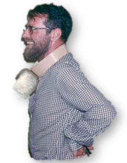
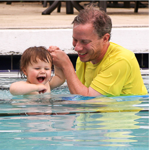
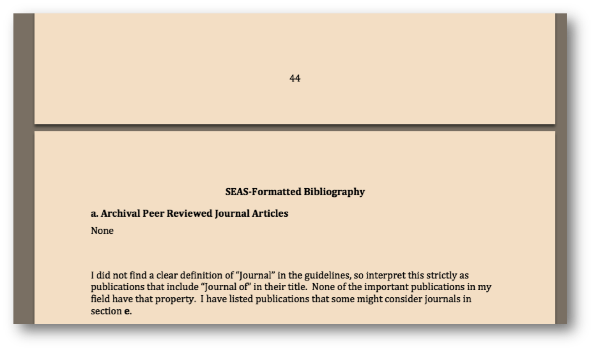

How to Ignore Advice
As a new faculty member, you’ll probably have scores of people wanting to give you advice, not to mention documents like this one. Getting advice is easy, and giving advice is even easier than that, but figuring out which advice to ignore is much harder.
Types of Advice
There are two main types of advice: consensus advice, which comes from committees or similar well-vetted sources; and individual advice, which is the mostly unfiltered view of a single person.
Consensus advice is usually correct (since lots of people agreed on it), generally agreeable (no one on the committee objected to it), and nearly always uninteresting (anything everyone agrees with is unlikely to be nonobvious or surprising).
Individual advice is nearly always wrong (its just one arrogant person’s opinion), usually disagreeable (it is based only on their personal circumstances and experience, and yours are certainly different), but often interesting and useful (since some indvidual felt strongly about it).
As an example, see if you can guess which of the recommendations below came from a “committee” and which from an “individual”:
|
The truth is that no ideal strategy has yet been found, and that every
approach has strengths and weaknesses. Given the current state of the
art in this area, we are convinced that no one-size-fits-all approach
will succeed at all institutions. Because introductory programs differ
so dramatically in their goals, structure, resources, and intended
audience, we need a range of strategies that have been validated by
practice.
ACM Computing Curricula 2001: Recommendations of the Joint ACM/IEEE Task Force on Computing Curricula. A “Joint Committee” is even less likely to produce something useful than a normal committee! The quoted section is proceeded by “In the interest of promoting peace among the warring factions, the CC2001 Task Force has chosen not to recommend any single approach. “
|
The use of COBOL cripples the mind; its teaching should, therefore, be
regarded as a criminal offense.

Edsger W. Dijkstra, How do we tell truths that might hurt?, 1975. Note
that Java didn’t exist yet when Dijksra wrote this, so Grace Hopper fans may be able to forgive him for picking unfairly on COBOL.
|
My meta-advice is that unless you feel particularly unprepared you shouldn’t waste much time on “committee” advice. Everyone should, however, read and listen to lots of advice from individuals, but ignore most of it.
The two things you should think about in taking any advice are:
How it applies to you — the person giving it has probably had very different life experiences from you, and may even have different values and goals. You should be careful to weigh any advice you receive in light of these differences.
Whether the person giving it has any incentives that don’t align with your own. This mostly applies to advice you may receive from administrators, whose goals or values may not be well-aligned with yours.
See Other Advice for links to some advice from othe individuals that I think is particularly worth reading.
Why You Shouldn’t Listen to Me
Here are some reasons you probably shouldn’t follow most of my advice here:
I’ve been extremely lucky. Many of the things that have worked out well for me could easily have been dismal failures if I hadn’t been so fortunate.
I started my professorial career back in 1999, when most things were much easier than they are today. I hope things haven’t gotten much worse for new faculty, but I fear that some major things have (at least in computer security research and most other computing research areas, things have certainly gotten more crowded).
I’ve had the good fortune to spend my career in a growing field at a wonderful university in a town that has been scientifically proven to be the happiest in all of the US, recognized as America’s best small town for food, and as the best place to live in the US. That said, the experience of most faculty at research-focused universities in endless golden-age fields has a fair bit in common, so I think most of my experience is not that different from what I’ve heard others have experienced in similar fields.
I had no major personal responsibilities until long after tenure (this was not by planning, but just the way things worked out for me). I hope those of you who have children earlier will still be able to have a paradasical professorship, but I guess some things may be a lot easier for me to say than they would be to do for people in that scenario. (I do have one small offering to help new professors with young children. One of the most stressful things I’m sure you are worrying about is how embarrassing it will be to you if your child ends up behind other students in her kindergraten class in theoretical computer science. Luckily, there is now a book to help with this!)
Why You Might Listen
That said, I do hope you are still willing to read on and perhaps listen to some of my advice. So, here are reasons why you might:
I’m not a master teacher, but I have taught over a half million students and learned a fair bit from many of them and a great deal from a handful of them.
I’m not a research superstar, but my “starbug number” is 1 and I did manage to make full professor at a semi-respectable institution without the ignominy of writing a single journal paper. I’ve also managed to produce some remarkable students, win some awards, and according to Prospect Magazine to be “the kind of nerdy savant whose gap-tooth smile and Monty Python humour attract a cult following on campus”. 
Actual page from my full promotion dossier (third attempt, which was successful).I never met Mr. JeffersonAAAS, but he is an outstanding virtual mentor!I’ve had the opportunity to learn closely from some truly exceptional and amazing people including but not limited to (in roughly chronological order) my mother and fatherNAE, Marc RaibertNAE, GBC, John Backus AAAS, AMT, NAE, Barbara LiskovAAAS, AMT, NAE, John Guttag AAAS , Anita JonesAAAS, NAE, Mary Lou SoffaKKA, Sebastian ThrunNAE, GBC, and Peter NorvigAAAS (not to mention many students, former students, and colleagues).
Beyond that, the two most important reasons I hope you will listen to me:
I am extraordinarily happy and extremely fulfilled with my life.
I believe in everything I’ve written here strongly enough, that if you read it and are not convinced, I’m willing to buy you coffee (even the super venti salted caramel mocha from Starbucks if you are into that sort of thing) to discuss it further.